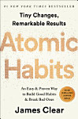

Atomic Habits

James Clear ·
No matter your goals, Atomic Habits offers a proven framework for improving--every day. James Clear, one of the world's leading experts on habit formation, reveals practical strategies that will teach you exactly how to form good habits, break bad ones, and master the tiny behaviors that lead to remarkable results.
How to Read a Book
Mortimer J. Adler, Charles Van Doren
Analyzes the art of reading and suggests ways to approach literary works, offering techniques for reading in specific literary genres ranging from fiction, poetry, and plays to scientific and philosophical works.
100 Must-read Life-Changing Books
Nick Rennison
Santiago's meeting with the alchemist opens his eyes to the true values of life, love and suffering The Diary of Anne Frank Half a century later the story of a teenager coming to maturity in the most terrible of circumstances remains ...
The Great Mental Models Volume 1
Rhiannon Beaubien, Shane Parrish
This volume details nine of the most versatile, all-purpose mental models you can use right away to improve your decision making, productivity, and how clearly you see the world.
Stop What You’re Doing and Read
Alexandre Dumas, Victor Hugo
To mark the publication of Stop What You're Doing and Read This!, a collection of essays celebrating reading, Vintage Classics are releasing 12 limited edition themed ebook 'bundles', to tempt readers to discover and rediscover great books.
Midnight Freeway
Vivaan Shah
Yogesh Moolchandani, a disreputable builder, is dead.
How to Read a Book
Mortimer J. Adler, Charles Van Doren
It's masterfully done.” –Farheed Zakaria Originally published in 1940, this book is a rare phenomenon, a living classic that introduces and elucidates the various levels of reading and how to achieve them—from elementary reading, ...
Book Lovers

Emily Henry
She's no heroine. He's no hero. So can they take a page out of an entirely different book? Brimming with witty banter, characters you can't help but fall for and off-the-charts chemistry, BOOK LOVERS is Emily Henry's best novel yet.